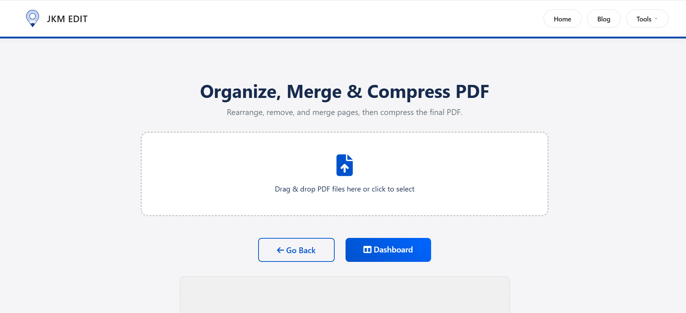
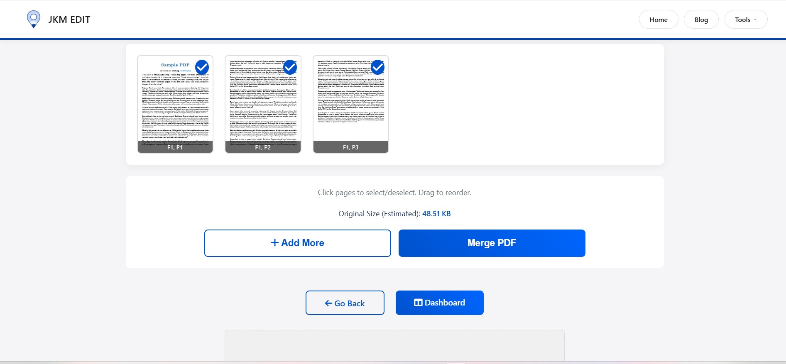
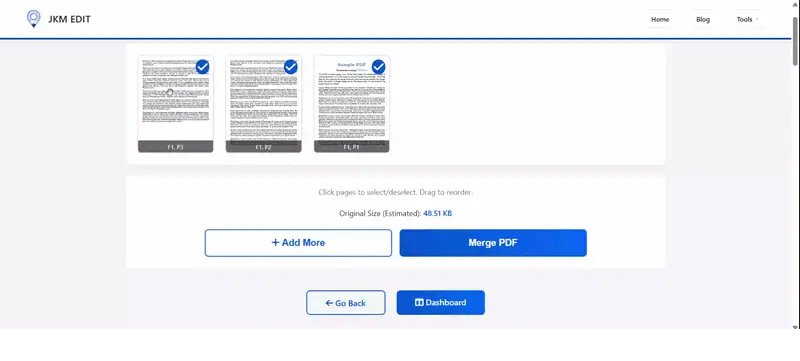
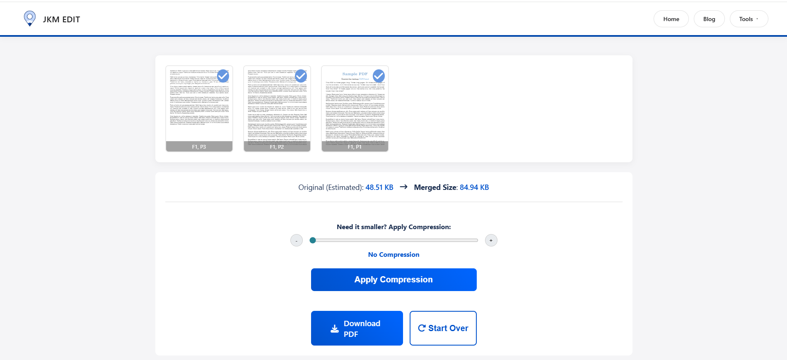

How to Merge PDF Files Online — Complete Guide
Discover the fastest, most secure way to combine your PDF documents seamlessly using intuitive online tools for better workflow management.

Introduction: Why PDF Merging Matters More Than Ever
In today’s digital-first environment, PDF files have become the universal standard for sharing documents. Businesses use PDFs for contracts, invoices, and reports. Students rely on them for assignments and research papers. Freelancers send proposals in PDF format, while government institutions often require official forms as PDFs.
But there is one common problem almost everyone faces:
You have multiple PDF files, and you need them combined into a single organized document.
Maybe you scanned pages separately. Maybe you downloaded multiple bank statements. Maybe your project report is divided into chapters. Or perhaps you need to submit several certificates in one file.
This is where PDF merging becomes essential.
Instead of manually handling multiple documents, a PDF merge tool allows you to combine several PDF files into one clean, professional document within seconds.
One of the fastest and easiest solutions available today is JKM Edit Home and its dedicated Merge PDF Tool. Unlike many complicated tools filled with ads, registrations, or hidden restrictions, JKM Edit focuses on simplicity, speed, and privacy.
What Is a PDF Merge Tool?
A PDF merge tool is an online utility that combines multiple PDF files into one single PDF document.
For example:
- 5 scanned pages → 1 PDF
- Multiple invoices → 1 report
- Separate chapters → 1 eBook
- Individual certificates → 1 submission file
Instead of sending several attachments separately, users can organize everything into one professional document. Modern PDF tools also allow users to rearrange pages, compress merged files, maintain original quality, merge directly from the browser, and download instantly.
Many modern browser-based tools now emphasize privacy-first processing and no-upload workflows.
Common Problems People Face Without PDF Merging
1. Sending Multiple Files Creates Confusion
Imagine applying for a job and uploading: Resume.pdf, Certificate1.pdf, Certificate2.pdf, Experience.pdf. Recruiters prefer one organized file. Merged PDFs look cleaner and more professional.
2. Large Projects Become Difficult to Manage
Students and office workers often work with multiple documents simultaneously. Without merging, files get misplaced, pages become disorganized, sharing becomes messy, and printing becomes highly inconvenient.
3. Mobile Users Struggle With File Organization
Most users today work directly from smartphones. Managing multiple PDFs on mobile devices is frustrating unless there is a simple online merging solution. That’s where browser-based tools like JKM Edit Merge PDF Tool become extremely useful.
Why PDF Merging Is Important
Better Document Organization
One merged file is easier to store, search, share, archive, and print. Instead of managing 20 different files, you handle only one.
Professional Presentation
A merged PDF appears more organized and professional. Businesses use merged PDFs for client proposals, legal documentation, reports, contracts, and project presentations. Students use them for assignments and portfolio submissions.
Faster Sharing
One attachment is faster than uploading multiple files repeatedly. Merged PDFs simplify email attachments, WhatsApp sharing, cloud uploads, and government portal submissions.
Improved Workflow Efficiency
PDF merging reduces unnecessary manual work. Instead of renaming files, organizing folders, and uploading repeatedly, you simply combine everything once.
Why People Prefer Online PDF Merge Tools
Traditional desktop software often requires installation, updates, storage space, and system permissions. Online tools eliminate these problems.
Modern online PDF solutions provide instant access, cross-device compatibility, browser-based processing, faster workflows, and no software installation. According to several modern PDF utility platforms, browser-based processing has become a major advantage for users who prioritize convenience and privacy.
How JKM Edit Solves PDF Merging Problems
1. Simple User Interface
Many PDF tools overwhelm users with unnecessary complexity. JKM Edit Merge PDF Tool focuses on a clean workflow: Upload PDFs, arrange files, merge instantly, and download the final document. No technical knowledge is required.
2. Completely Browser-Based
You do not need to install anything. The tool works directly in your browser on desktop, laptop, Android, iPhone, and tablets.
3. Fast Processing
Speed matters. Users do not want to wait several minutes for simple document operations. JKM Edit is designed for quick processing so users can merge PDFs efficiently.
4. Multiple PDF Support
Users can combine notes, contracts, research papers, reports, scanned pages, and eBooks all into one file.
5. Free Accessibility
Many websites lock important features behind subscriptions. JKM Edit focuses on accessibility and convenience. This matters because many users specifically prefer tools that avoid aggressive premium restrictions or unnecessary sign-ups.
6. All-in-One Productivity Platform
Unlike single-purpose websites, JKM Edit Home provides multiple categories including PDF tools, Image tools, Finance tools, Utility tools, and File management tools. This creates a centralized workflow environment.
Ready to organize your documents?
Stop wrestling with multiple files. Combine them seamlessly in seconds.
Try JKM Edit Merge PDF Free
Step-by-Step Guide: How to Merge PDF Using JKM Edit
Step 1 — Open the Tool
Visit the official secure link: JKM Edit Merge PDF Tool.

Step 2 — Upload PDF Files
Select all PDF documents you want to combine. You can upload two files, ten files, multiple reports, or separate scanned pages effortlessly.

Step 3 — Arrange File Order
This is extremely important. The final merged PDF follows the exact order you choose. You can move files up, move files down, organize chapters, and rearrange pages logically.

Step 4 — Click Merge
The system processes your documents automatically. The merging process usually takes only a few seconds depending on file size.
Step 5 — Download Final PDF
Your merged PDF becomes ready instantly. Now you can share it, print it, upload it, archive it, or submit it online.

Watch Full Tutorial: How to Merge PDF Files Using JKM Edit
Prefer a visual guide? Watch this quick step-by-step video tutorial demonstrating exactly how fast and seamless it is to combine your documents.
What You Will Learn:
- How to securely upload multiple documents
- Tips for drag-and-drop page arrangement
- How to download and verify your combined file
Real-Life Use Cases for PDF Merging
Students
Students frequently combine assignments, notes, research papers, certificates, and internship reports. One organized PDF looks more professional during submission.
Businesses
Companies merge contracts, proposals, reports, client documentation, and financial records. Merged PDFs vastly improve workflow efficiency across teams.
Government Applications
Many government portals require identity proof, address proof, certificates, and photos to be uploaded all in one single PDF container.
Freelancers and Designers
Creative professionals merge portfolios, client samples, design previews, and documentation. This dramatically improves presentation quality and client trust.
Benefits of Using JKM Edit Instead of Traditional Software
When comparing modern web-based utilities to outdated traditional desktop software, the choice becomes clear for daily productivity.
| Feature | Traditional Software | JKM Edit |
|---|---|---|
| Installation Required | Yes | No |
| Device Compatibility | Limited to OS | Cross-platform (Any OS) |
| Browser Access | Rare | Yes |
| Quick Usage | Moderate (Launch time) | Fast & Instant |
| Mobile Friendly | Sometimes | 100% Yes |
| Easy Interface | Often cluttered | Simple & Clean |
| Cost | Often Paid/Subscription | Free Access |
Privacy and Security in PDF Tools
One major concern with online PDF tools is document privacy. Users often upload sensitive files including legal documents, financial records, personal certificates, and business contracts.
Modern privacy-focused tools increasingly emphasize browser-based processing where files are handled locally or purged instantly from servers. JKM Edit also highlights secure and browser-based accessibility as a core part of its platform, guaranteeing your sensitive workflow safety.
Mobile PDF Merging Is Becoming Essential
A large percentage of users now manage documents directly from smartphones. This includes students, remote workers, small business owners, delivery partners, and freelancers.
A responsive online tool like JKM Edit Merge PDF Tool helps users merge documents anytime from anywhere, bridging the gap between desktop power and mobile convenience.
Best Practices While Merging PDFs
- Keep Proper File Names: Before merging, rename files logically, remove duplicates, and organize the sequence (Example: Chapter-1.pdf, Chapter-2.pdf).
- Check Final Order: Always verify page arrangement before merging. Incorrect ordering can create confusion later.
- Compress Large Files: If your merged PDF becomes too large for email attachments, use a PDF compression tool afterward. JKM Edit Home also includes additional PDF management utilities.
- Maintain Document Clarity: Ensure the initial files are not blurry, as the final document will retain the original quality of the inputted pages.
Future of Online PDF Tools
The future of productivity is moving toward faster browser processing, AI-assisted workflows, cloud-independent tools, privacy-focused systems, and mobile-first experiences. Modern users prioritize simplicity and speed over complicated enterprise software, meaning platforms like JKM Edit are perfectly positioned for the modern workflow.
Frequently Asked Questions (FAQs)
Yes, using modern online tools like JKM Edit, you can merge multiple PDF files completely free without any hidden charges or premium subscriptions.
Absolutely. JKM Edit operates entirely in your mobile browser, allowing you to combine PDF files on any Android, iPhone, or tablet device instantly.
No. A professional PDF merge tool retains the original resolution, formatting, and quality of your individual files when combining them into a single document.
Yes, JKM Edit prioritizes user privacy. Documents are processed securely, ensuring your sensitive data remains protected during the workflow.
Yes. Before finalizing the merge, you can drag, drop, and rearrange the order of your files to ensure the final document flows exactly how you want it.
Final Thoughts
PDF merging may seem like a small task, but it solves major workflow problems in daily digital life. Whether you are a student, a freelancer, a business owner, an office worker, or a government applicant, you will eventually need to combine documents professionally.
That is exactly where JKM Edit Merge PDF Tool becomes incredibly valuable. Instead of dealing with confusing software or expensive subscriptions, users can quickly merge PDFs directly from the browser using a clean and accessible workflow.
If you want an easy, fast, and organized way to manage your PDF files, visit JKM Edit Home and simplify your document workflow today.

Ready to Streamline Your Documents?
Experience the easiest, fastest, and most secure way to combine multiple PDF files into one. No installation required.
Merge PDF Now